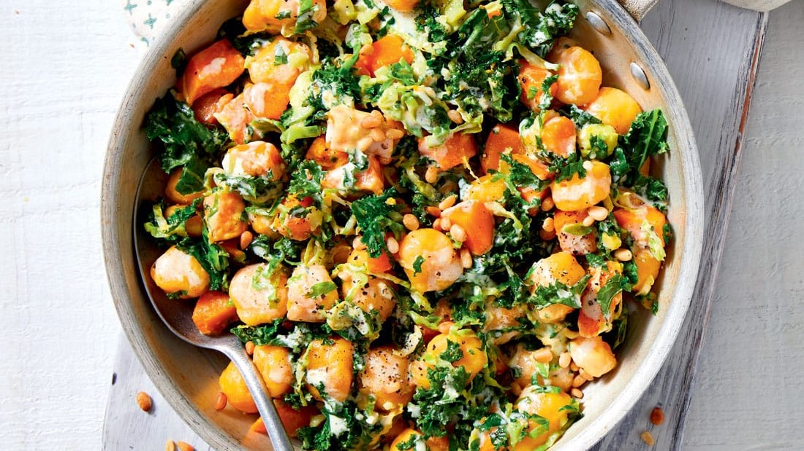
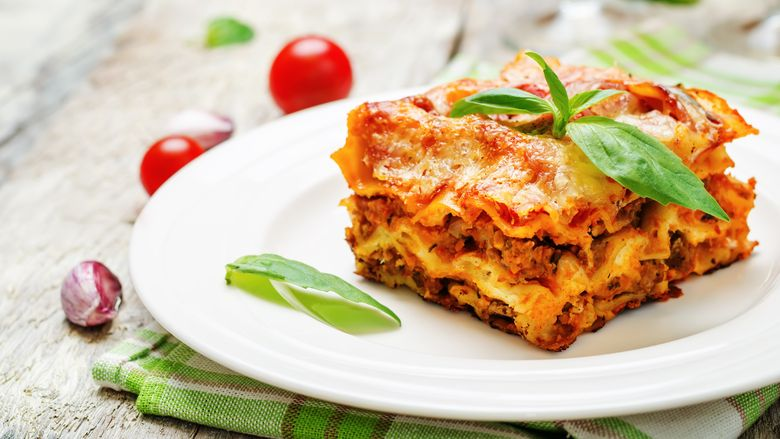
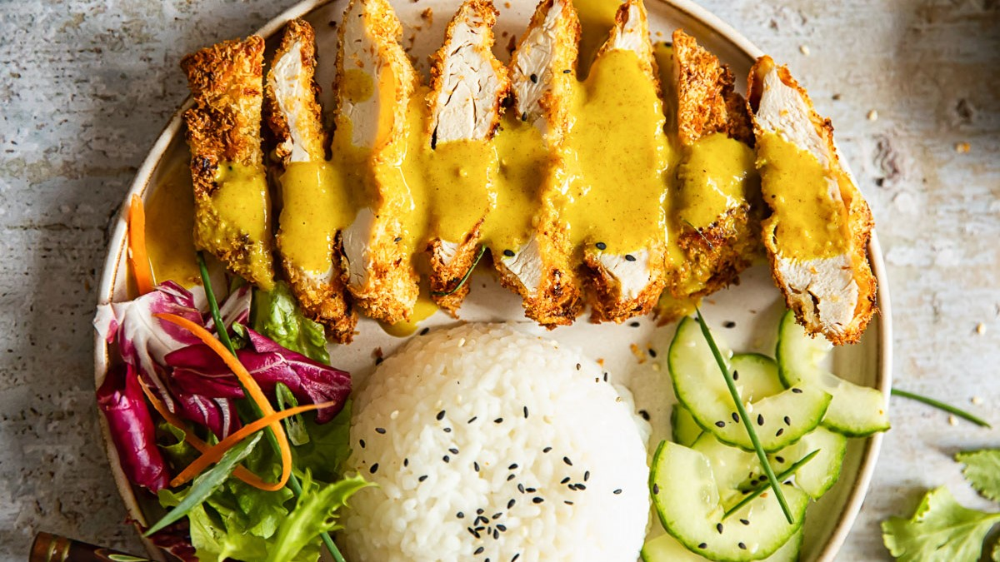
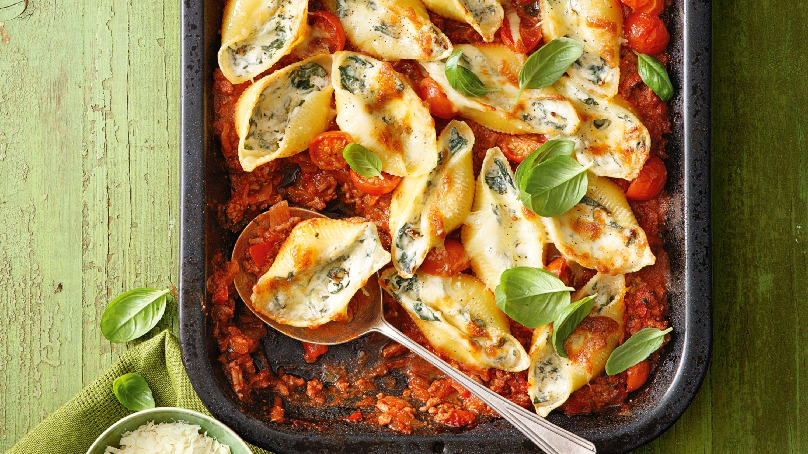

Healthy Gnocchi

Ingredients
- 1 tsp olive oil
- 1 red onion
- 2 garlic cloves
- 1 tbsp tomato purée
- 400g can white beans
- 400g can chopped tomatoes
- 100g frozen spinach
- 400g pack fresh gnocchi
- 2 tbsp reduced-fat crème fraîche
- 25g parmesan
- small handful of fresh parsley
Steps
- Heat the oil in a large saucepan over a medium-low heat and cook the onion for 8-10 mins until soft but not coloured. Stir in the garlic and cook for 1 min until fragrant.
- Add the tomato purée and the beans, along with their liquid, then pour in the tomatoes. Bring to a simmer, season well, then stir in the spinach. Stir and cook for 2-3 mins until the spinach has loosened.
- Add the gnocchi, cover and cook for another 2-3 mins, then uncover and stir in the crème fraîche. Simmer for another 5 mins, adding a splash of boiling water if needed, until the gnocchi is cooked through. Serve in bowls sprinkled with the parmesan, fresh parsley and a little black pepper to finish.
Lasagne

Ingredients
- 1 tbsp olive oil
- 1 large onion
- 320g carrots
- 2 celery sticks
- 2 bay leaves
- 500g 5% beef mince
- 3 large garlic cloves
- 400g can chopped tomatoes
- 2 tbsp tomato purée
- 1½ tsp vegetable bouillon powder
- 400ml semi-skimmed milk
- 30g wholemeal flour
- 6 sheets wholemeal lasagne
- 25g finely grated parmesan
Steps
- Heat the oven to 180C/160C fan/gas 4. Heat the oil in a large frying pan over a medium heat and fry the onion, carrots, celery and one of the bay leaves for 8-10 mins until the veg softens and is starting to turn golden. Add the mince and garlic, and stir-fry until the beef browns, about 5 mins. Tip in the tomatoes and a canful of water, the tomato purée and bouillon, bring to the boil, then cover and simmer for 20 mins, removing the lid after 10 mins to reduce the mixture slightly.
- Meanwhile, pour the milk into a medium pan with the flour and whisk over a low heat until the mixture is lump-free. Add the second bay leaf and a good pinch of nutmeg, and continue to cook, whisking, for 8-10 mins until thick.
- Remove the bay from the mince and white sauce, and discard. Spoon a third of the mince into the base of a 19 x 24cm baking dish and top with two lasagne sheets. Spoon over half of the remaining mince, then top with two more lasagne sheets, the rest of the mince and the remaining lasagne sheets. Spoon over the white sauce and sprinkle with the cheese. Bake for 40 mins until bubbling and golden.
Healthy chicken katsu curry

Ingredients
- 1 tsp cold-pressed rapeseed oil
- 2 boneless, skinless chicken breasts
- 2 tsp cold-pressed rapeseed oil
- 1 medium onion
- 2 garlic cloves
- thumb-sized piece ginger
- 2 tsp medium curry powder
- 1 star anise
- ¼ tsp ground turmeric
- 1 tbsp plain wholemeal flour
- 100g long-grain brown rice
- 1 medium carrot
- ⅓ cucumber
- 1 small red chilly
- juice ½ lime
Steps
- Cook the brown rice in plenty of boiling water for 35 mins or until tender.
- Crush the almonds using a pestle and mortar, or blitz in a food processor until finely chopped, then sprinkle over a plate. Grease a small baking tray with a little of the oil if baking in the oven. Brush the chicken on both sides with the remaining oil and season well. Coat the chicken with the nuts and place on the tray. Press any remaining nuts from the plate onto each breast. Bake for 20 mins in the oven, or 18-20 mins in the air-fryer until browned and cooked through. Rest for 4-5 mins on the tray, then slice thickly.
- Meanwhile, make the sauce. Heat the oil in a medium non-stick saucepan and add the onion, garlic and ginger. Loosely cover the pan and fry gently for 8 mins or until softened and lightly browned, stirring occasionally.
- Stir in the curry powder, star anise, turmeric and a good grinding of black pepper. Cook for a few secs more, stirring. Sprinkle over the flour and stir well. Gradually add 400ml water to the pan, stirring constantly.
- Bring the sauce to a simmer and cook for 10 mins, stirring occasionally.
- Once the rice is tender, add the spring onions and cook for 1 min more. Toss the carrot and cucumber with the chilli, lime juice and herbs.
- Divide the sliced chicken between two plates, pour over the sauce and serve with the rice, salad and lime wedges for squeezing over.
Stuffed pasta bake bolognese

Ingredients
- 250g large pasta shells
- 200g mascarpone
- 2 x 125g balls mozzarella
- large bunch basil
- 3 garlic cloves
- parmesan
- 1 tbsp olive oil
- 1 onion
- 1 celery stick
- 1 carrot
- 400g beef mince
- 2 garlic cloves
- 250ml red wine
- 1 tbsp tomato purée
- 3 bay leaves
- 2 x 400g cans chopped tomatoes
- pinch of sugar
- 1-2 tsp balsamic vinegar
Steps
- To make the bolognese, heat the oil in a wide ovenproof pan over a medium heat. Fry the onion, celery and carrot with some seasoning for 20 mins until soft and lightly golden. Tip in the beef mince, turn up the heat and fry, stirring regularly, for another 10 mins until the mince browns. Add the garlic, fry for a minute, then pour in the wine and bubble for a few mins more, scraping the pan to release any bits. Stir through the purée, bay leaves and tomatoes, with a canful of water. Simmer for 1½ hrs, covered for the first hour, then remove the lid and bubble until the tomatoes have broken down. Season with salt, pepper, the sugar and balsamic vinegar.
- Tip the pasta shells into a large heatproof bowl with a pinch of salt, and pour over a kettle of boiled water. Cover and leave to soften for 15-20 mins – they need to retain some firmness so you can fill them.
- Heat the oven to 200C/180C fan/gas 4 and drain the pasta. Use a fork to mash the mascarpone with the mozzarella, chopped basil, garlic and some black pepper in a bowl.
- The bolognese should be a little wetter than you’d like as the pasta shells will absorb some of the liquid as it bakes. Remove from the heat, giving it a final stir. Using a teaspoon, fill the pasta shells with some of the mascarpone mixture, pressing the mix in with your index finger. Nestle the shells into the sauce, filled-side up. Bake for 20-30 mins until the top is golden and bubbling, and the pasta is tender. Grate over some parmesan and finish with a few basil leaves.